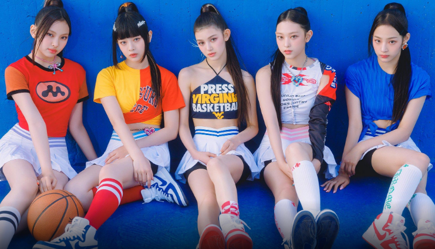

¡New Jeans!
New Jeans es un grupo de K-pop surcoreano que debutó en agosto de 2022, bajo ADOR, una subsidiaria de HYBE Corporation. La formación del grupo fue parte de una estrategia de creación de talentos que busca presentar una nueva generación de artistas en la escena musical. Su debut fue anticipado con gran expectación, y el grupo ha logrado captar la atención del público desde su primer lanzamiento.